Поле введення Entry
Поле введення Entry
Що таке Entry
На минулому уроці ми розглянули, як показувати текст (Label) і реагувати на кліки (Button). Сьогодні ознайомимося із новим віджетом, який дозволяє запитувати дані у користувача – Entry. Це поле для введення одного рядка тексту:
from tkinter import *
window = Tk()
window.geometry("400x250")
window.eval("tk::PlaceWindow . center")
entry = Entry(
window,
font=("Arial", 14),
width=20,
)
entry.pack(pady=20)
window.mainloop()Пояснення параметрів:
- window – у якому контейнері розмістити поле.
- font – шрифт тексту, який вводить користувач.
- width=20 – ширина поля. Увага: вона вимірюється в символах, а не в пікселях. width=20 означає, що вміститься приблизно 20 літер.
- Також працюють bg (колір фону поля) та fg (колір тексту).
Також можна змінити вигляд контуру поля:
entry = Entry(
window,
font=("Arial", 14),
width=20,
bd=0, # прибирає стандартну об'ємну рамку
highlightthickness=3, # товщина нової рамки (в пікселях)
highlightbackground="lightblue", # колір рамки у звичайному стані
highlightcolor="blue", # колір рамки, коли поле активне (в ньому курсор)
)Як отримати введені дані: .get()
Отже, користувач ввів у поле якийсь текст. Як отримати цей текст із поля, щоб використати його далі в програмі? Для цього існує метод .get(). Він повертає вміст поля:
user_input = entry.get()Але цей метод потрібно використовувати всередині функції, яка викликається при натисканні кнопки. Якщо помістити його поза функцією, він викличеться лише один раз одразу при запуску програми, коли користувач ще не встиг нічого ввести, і поверне порожній рядок "".
Розглянемо простий приклад:
from tkinter import *
window = Tk()
window.geometry("400x250")
entry = Entry(window, font=("Arial", 14), width=20)
entry.pack(pady=10)
def show_text():
user_input = entry.get()
label.config(text=user_input)
btn = Button(window, text="Print", command=show_text, font=("Arial", 12))
btn.pack(pady=10)
label = Label(window, text="", font=("Arial", 16))
label.pack(pady=10)
window.mainloop()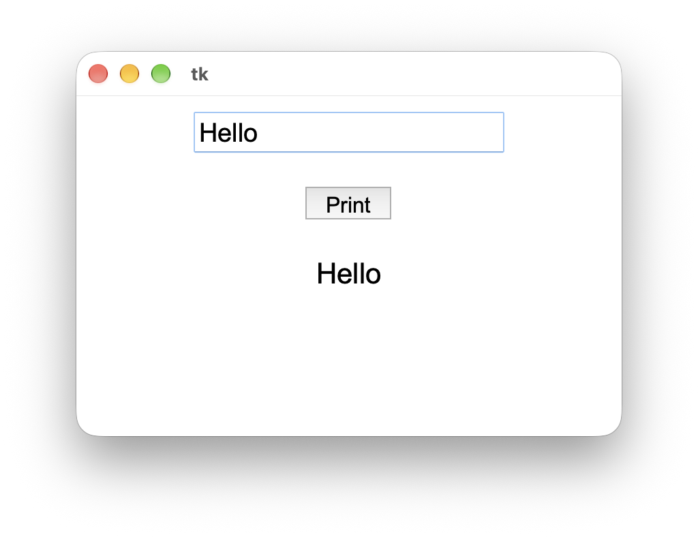
Щоб після виведення тексту на екран очистити текстове поле, можна використати метод .delete():
def show_text():
user_input = entry.get()
label.config(text=user_input)
entry.delete(0, END) # видаляє весь текстТакож варто зважати, що .get(), як і input(), повертає текстовий рядок, і на число його треба перетворювати з int() або float().
Практика
Завдання 1
1) Створи вікно з полем для введення тексту, кнопкою "Greet" та написом "Enter your name". Після натискання кнопки напис має змінюватися на "Hello, <ім'я>!".
2) Якщо поле порожнє, напис має показувати "Please enter your name" замість привітання (перевірка через if).
3) Додай кнопку Clear, яка стирає текст і поля, і напису.
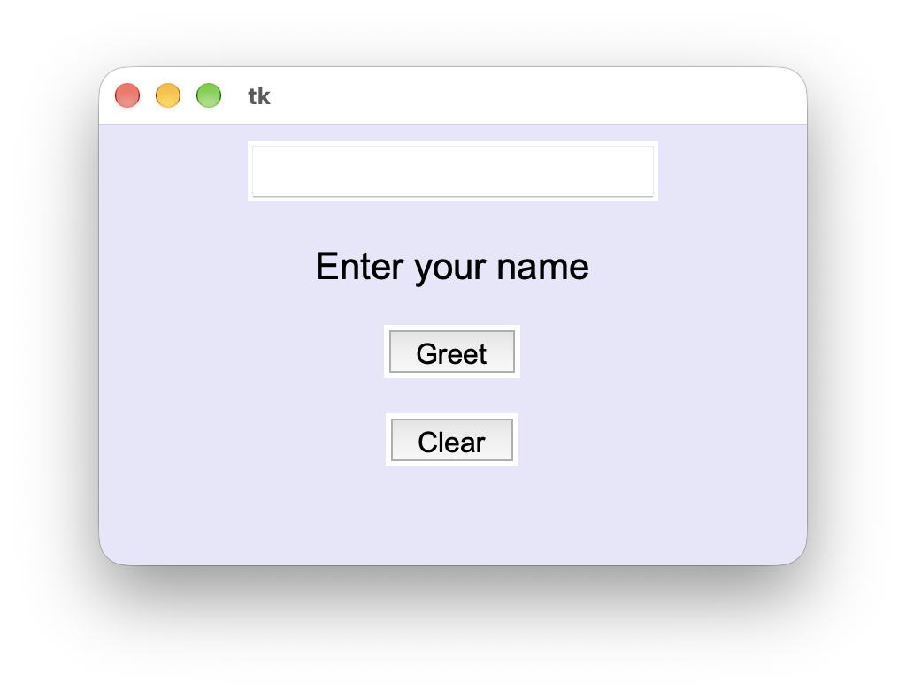
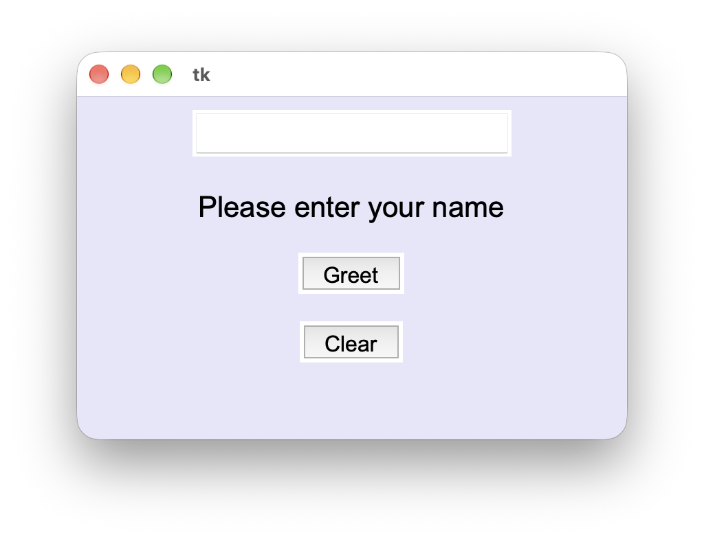
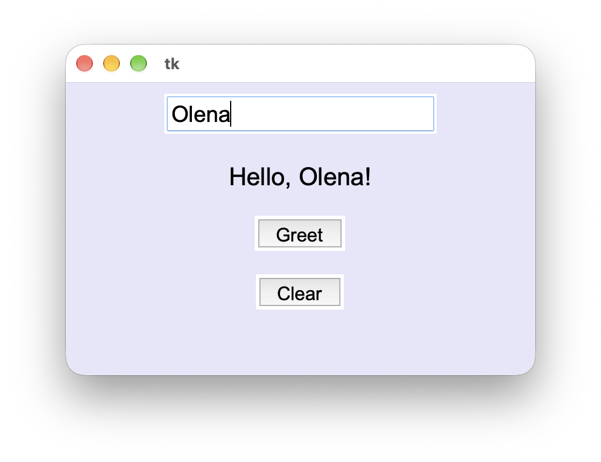
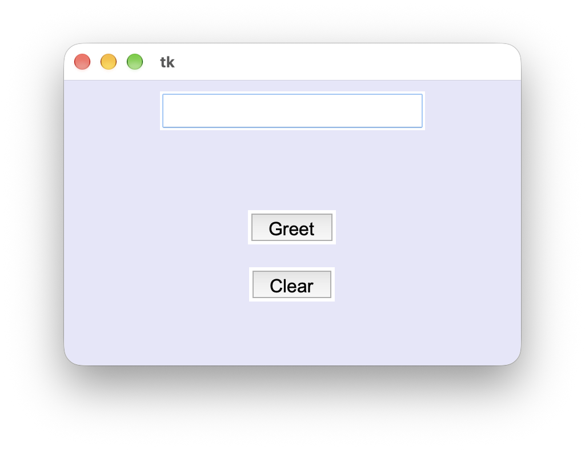
Завдання 2
Створи програму, у якій користувач вводить назву кольору англійською (pink, lavender, teal...), натискає кнопку, і фон вікна змінюється на цей колір.
Якщо ввести неіснуючий колір, програма видасть помилку TclError. Її можна обробити так:
try:
window.config(bg=color)
except TclError:
... # напиши в Label, що такого кольору немає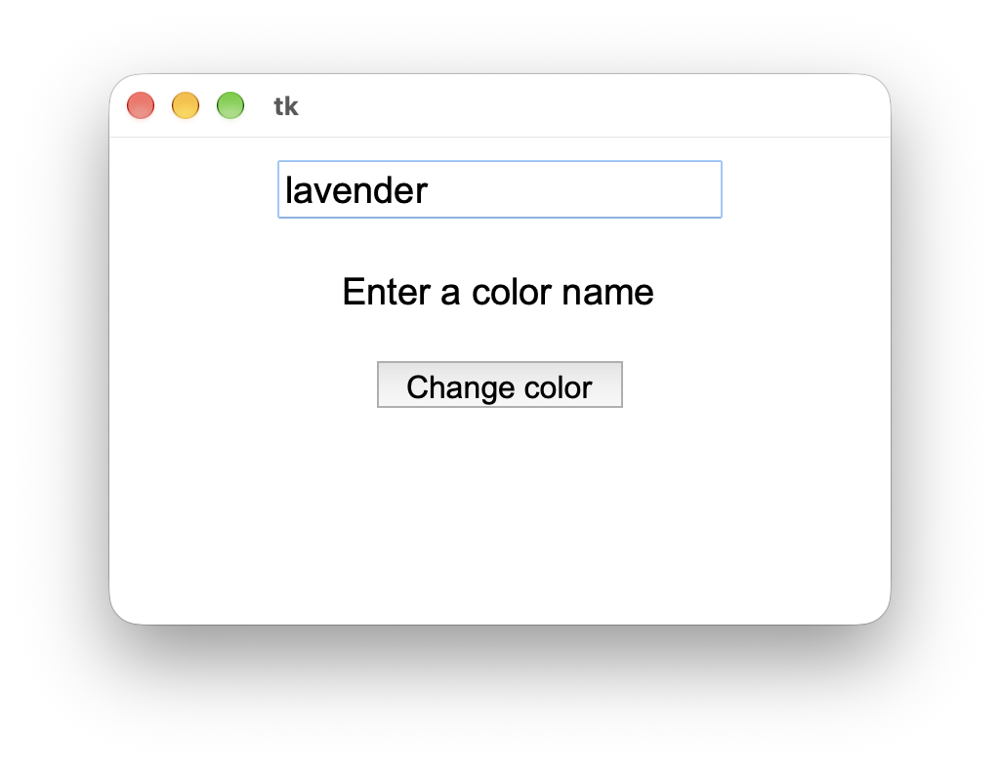
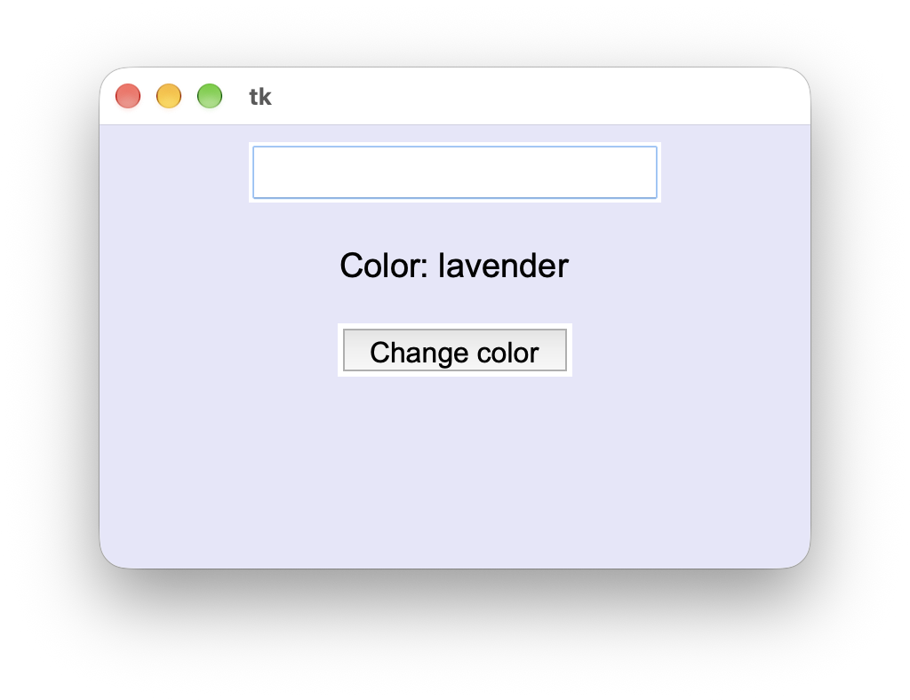
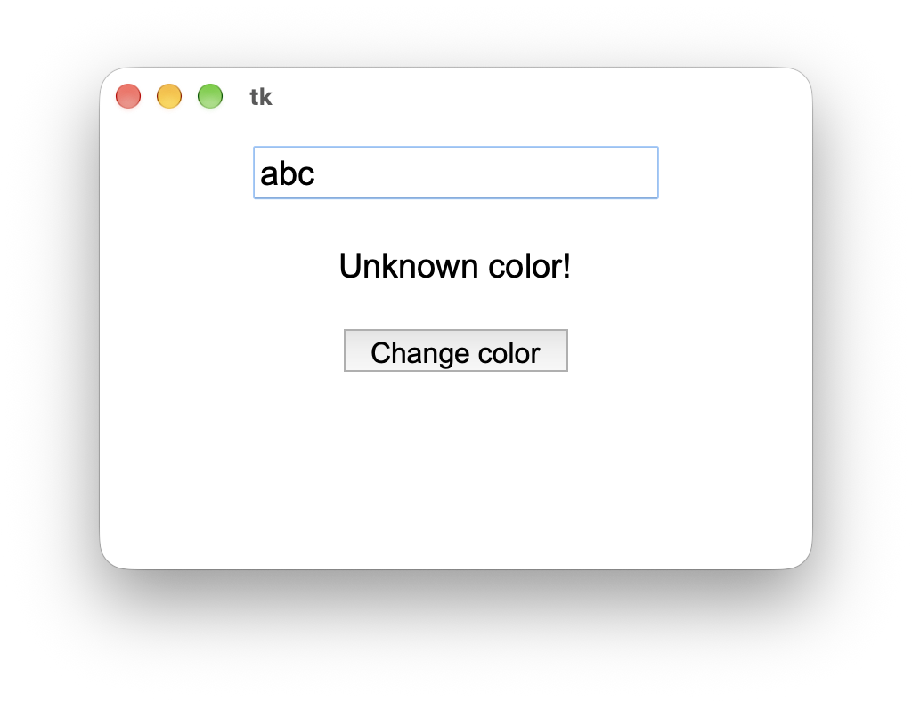
 Розташування віджетів – Frame
Розташування віджетів – Frame
Що таке Frame
Метод .pack() за замовчуванням розташовує віджети один під одним, і це не завжди зручно. Що як потрібно розмістити дві кнопки поруч? Або підпис і поле введення в один рядок. Для цього є віджет Frame.
Frame – це рамка, яка знаходиться у вікні, а всередині неї можна помістити інші віджети. Це ніби "вікно всередині вікна".
Спочатку створюємо Frame і розміщуємо його у вікні. Потім створюємо віджети, але в якості контейнера вказуємо вже не window, а цей Frame:
buttons_frame = Frame(window)
buttons_frame.pack(pady=10)
btn1 = Button(
buttons_frame,
text="Left",
font=("Arial", 14),
)
btn1.pack(side=LEFT, padx=5)
btn2 = Button(
buttons_frame,
text="Right",
font=("Arial", 14),
)
btn2.pack(side=LEFT, padx=5)Щоб віджети всередині рамки стали в рядок, всередині .pack() використовуємо параметр side. Він може приймати такі значення:
| Значення | Де розміщується віджет |
|---|---|
| TOP | зверху (за замовчуванням – віджети стають один під одним) |
| LEFT | зліва (віджети стають у рядок зліва направо) |
| RIGHT | справа (віджети стають у рядок справа наліво) |
| BOTTOM | знизу (віджети стають знизу вгору) |
Практика
Завдання 3
Створи програму, яка приймає два числа і рахує їхню суму. Використай Frame, щоб розмістити текстове поле і його назву в одному рядку (a: [___]). Для a і b потрібні два окремі Frame.
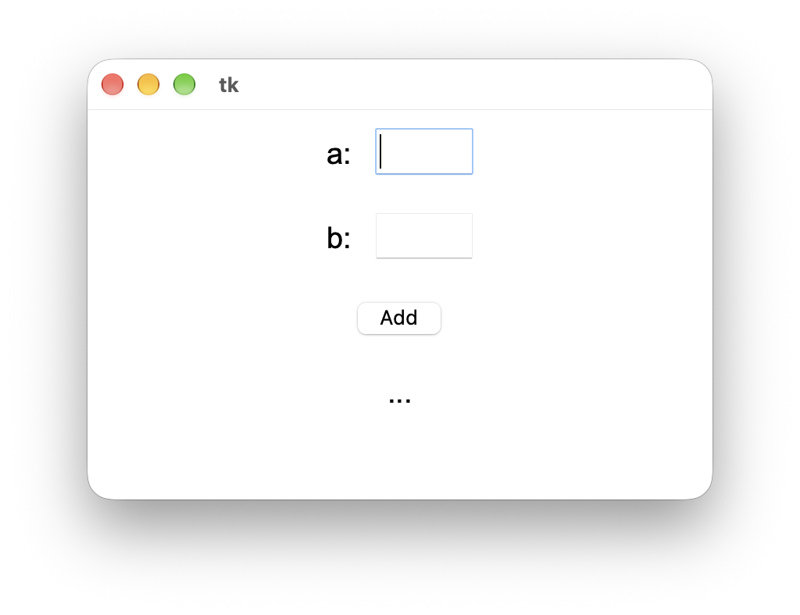
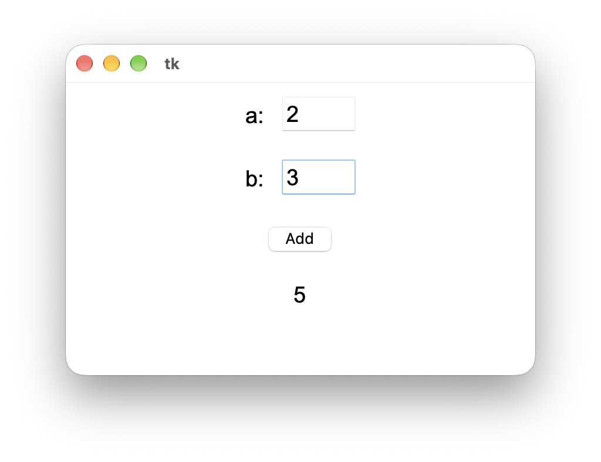
 Домашнє завдання
Домашнє завдання
Завдання
1) Дай відповіді на питання:
1. Функція, яка створює напис:
2. Функція, яка створює кнопку:
3. Функція, яка створює поле для вводу тексту:
4. Метод, який дозволяє змінювати налаштування елементів:
5. Метод, який дозволяє отримати текст із поля вводу:
2) Допиши код:
Створи поле для вводу тексту, налаштуй для нього шрифт і ширину, а також колір фону і тексту (вигляд рамки змінювати не потрібно), на свій смак та розмісти його у вікні. Очікуваний результат:
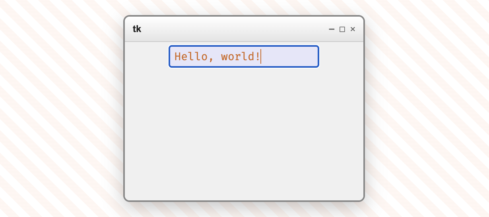
Очікування запуску...